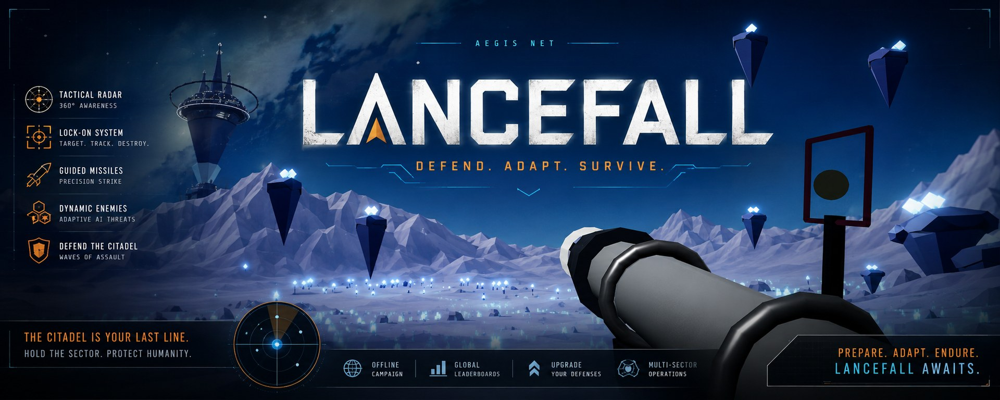
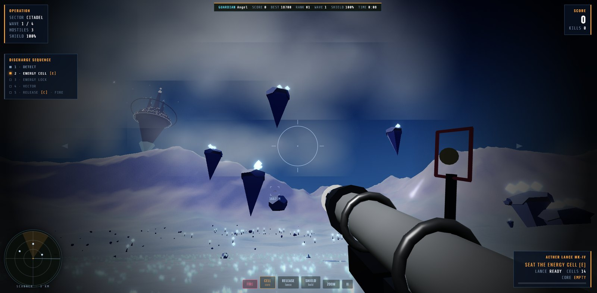
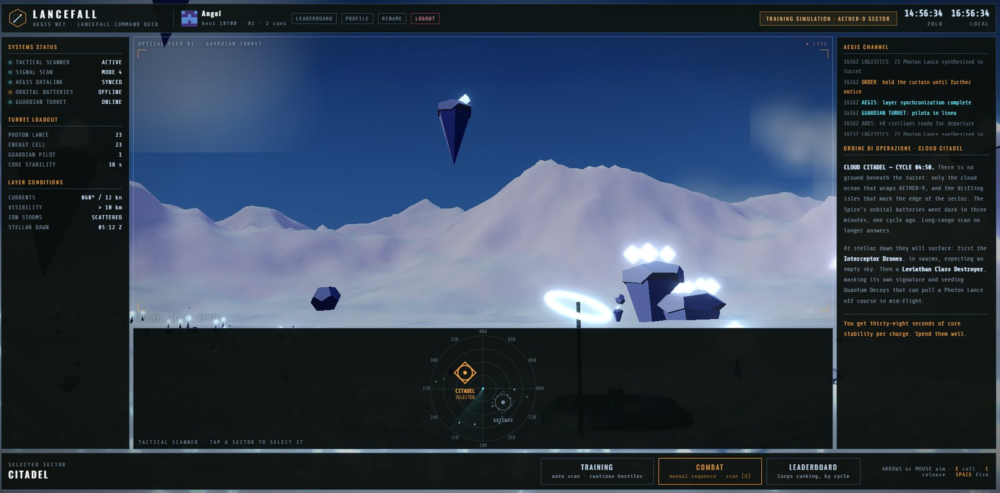
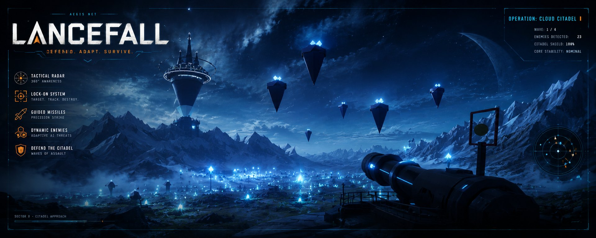

DETECT
Read the scanner, judge speed and heading, decide which signature matters first.

There is no ground below — only the cloud ocean. Seat the cell, hold the signature, lead the vector, release the lance. Miss a step and nothing leaves the rail.
Runs in the browser, on desktop and mobile. No account needed — guests play immediately, and a callsign only matters if you want your runs on the leaderboard.

The gap between a kill and a wasted charge is not aim — it is order. Five steps, every single shot, while something fast comes at you.
Read the scanner, judge speed and heading, decide which signature matters first.
Seat the cell and wait for the core to stabilise. You get thirty-eight seconds of it.
Hold the target inside the seeker until the lance answers with a steady tone.
The lance leaves along the barrel, not toward the target. Lead it, or watch it burn energy turning.
Uncage the seeker, then pull. Fire without consent and the charge flies blind.
Captured in play, not staged. Above: the discharge sequence running live at Cloud Citadel. Below: the AEGIS command deck, where you pick the sector before you drop in.

The same weapon, two entirely different reasons to keep your nerve.
The orbital batteries went dark one cycle ago. Four waves surface from the cloud ocean, and the last one is a Leviathan Class Destroyer that masks its signature and seeds Quantum Decoys. Survive, and the sector holds.
Five Ark shuttles must carry civilians out. On departure a shuttle is clamped, slow and shieldless for twenty-nine seconds. THE NULL knows it, and it is not coming for you. Lose three, and the evacuation is over.

A handful of seconds, incomplete information, and a sequence that punishes every skipped step.
PLAY FREE ON ITCH.IO →